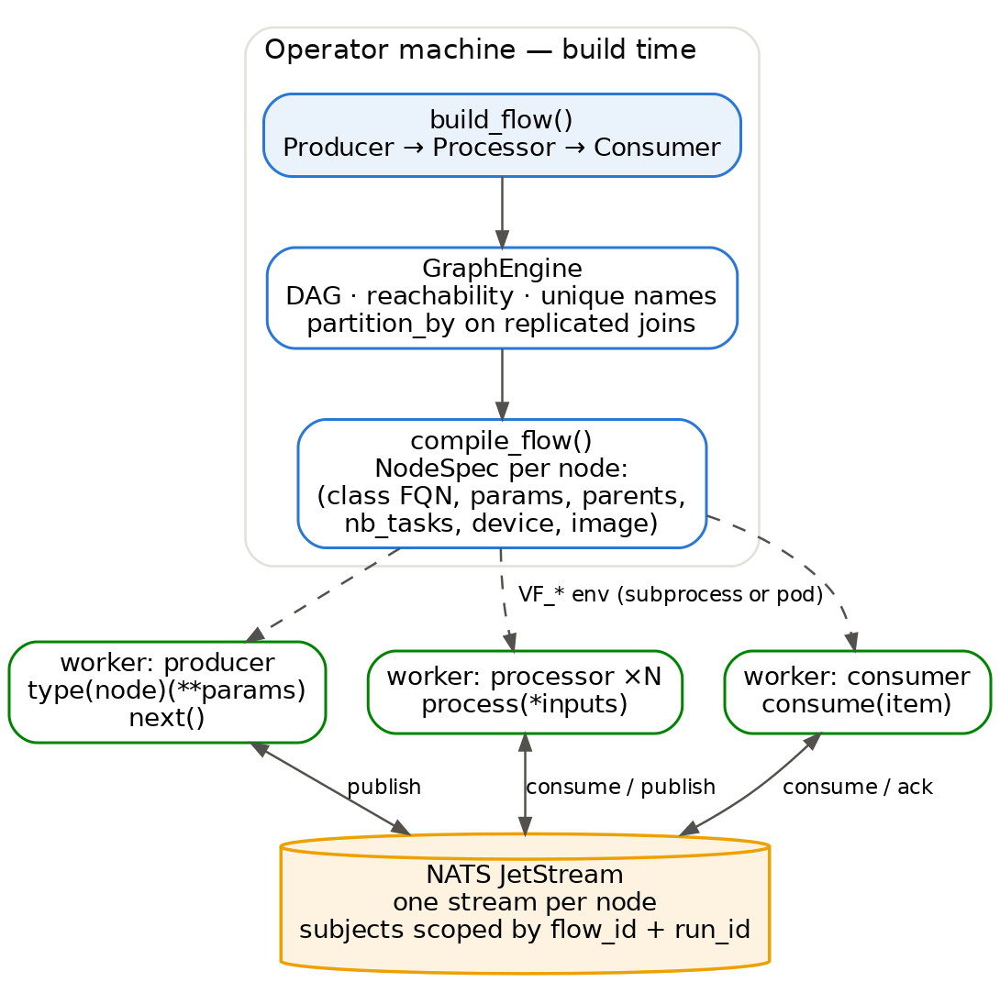
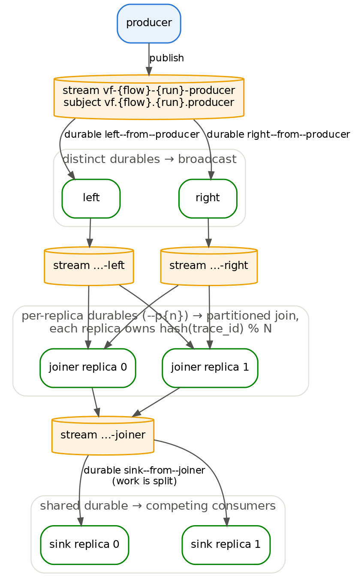
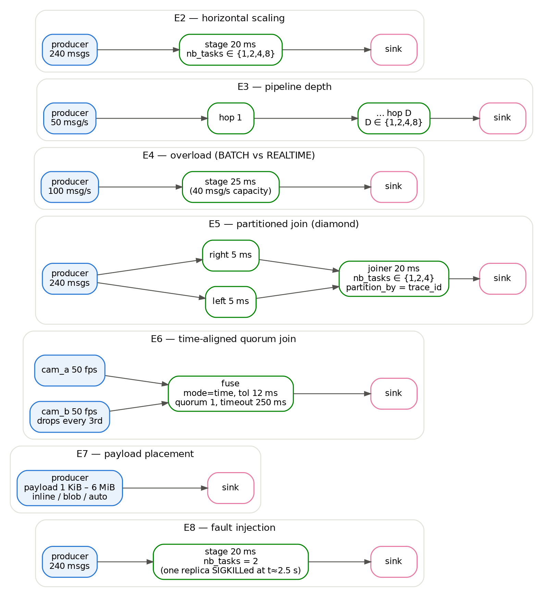
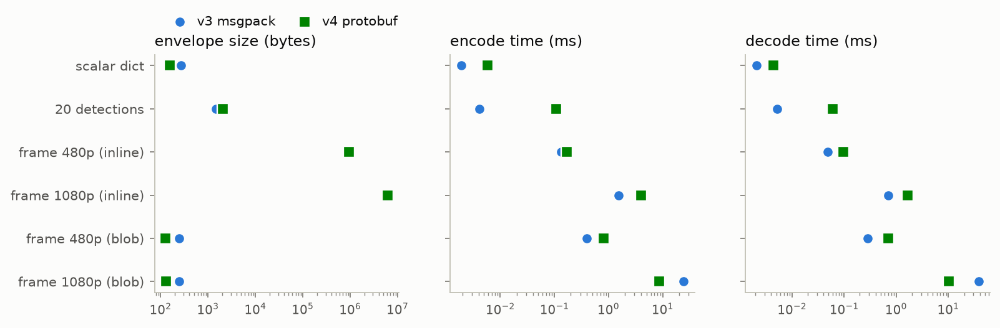
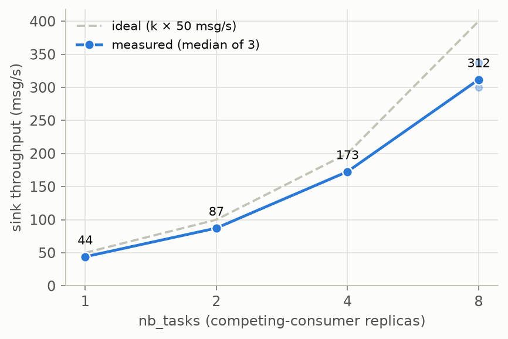
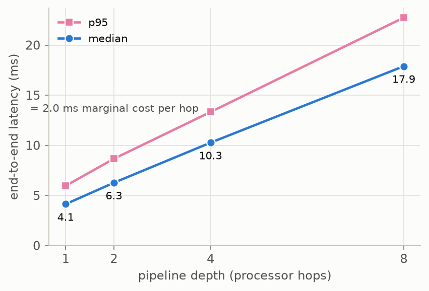
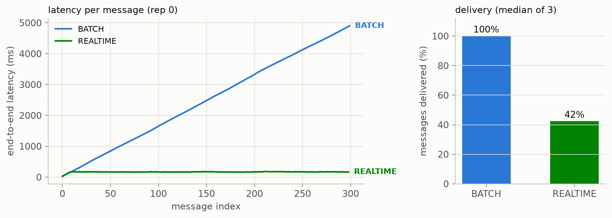
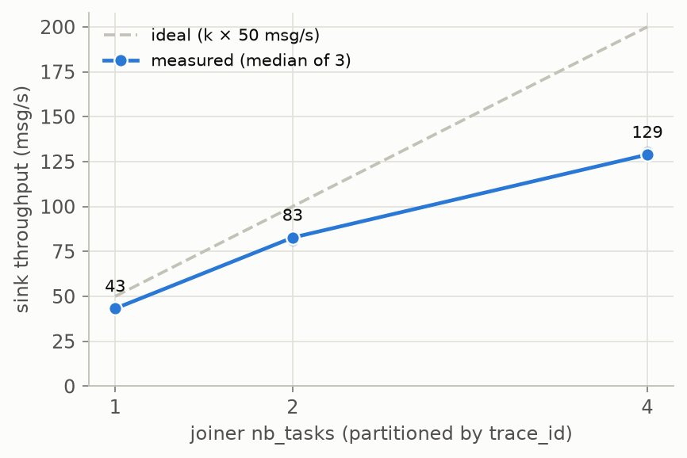
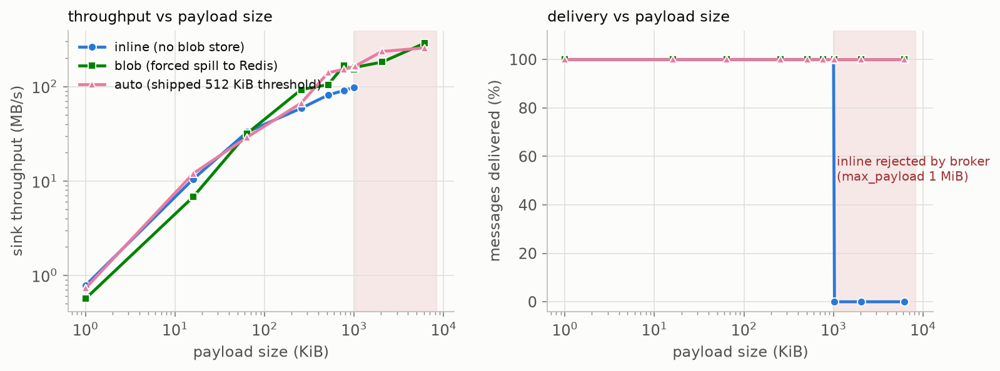

Videoflow is a Python framework for building video and stream processing applications as a
directed acyclic graph of producers, processors, and consumers. Its central
design decision is that the graph is built on one machine and executed on many: each node
is serialized to a (class path, params) record and reconstructed inside its own
worker — an OS subprocess during development, a Kubernetes workload in production — with all
inter-node traffic carried by per-node NATS JetStream streams. One retention-policy switch turns
the same graph from a loss-free, backpressured batch pipeline into a freshest-wins real-time
pipeline. This paper describes the programming model, the compilation pipeline, the messaging
topology that yields broadcast, competing-consumer, and partitioned routing purely through
consumer naming, the dual wire format (msgpack and protobuf) that enables components written in
any language, and the deployment tooling. We evaluate the runtime with eight experiments on toy
graphs: wire-format microbenchmarks, horizontal scaling of a stage to 8 replicas
($E2_EFF8 % of ideal), per-hop pipeline overhead (≈$E3_SLOPE ms per stage), delivery
semantics under 2.5× overload (BATCH delivers 100 % with growing latency; REALTIME delivers
$E4_RT_PCT % with flat ≈$E4_RT_LAT ms latency), partitioned join scaling, quorum-based
fusion of unsynchronized sources, a payload-size sweep that locates the exact point where
broker-inline transport fails and the Redis blob store becomes necessary
($E7_PASS_B B passes, $E7_FAIL_B B is rejected), and a fault-injection run in which a
SIGKILLed worker replica causes zero loss and zero duplicates.
Video-analytics applications are naturally pipelines: decode a stream, detect objects, track them, aggregate events, and emit results. Writing such an application as a single process is easy; scaling it past one machine usually is not. The stage that runs a neural network needs a GPU and five replicas, the tracker is stateful and must see every frame in order, the sink calls an external API and must not double-apply effects on retry — and none of that should force a rewrite of the pipeline logic.
Videoflow's answer is to make the pipeline description itself the deployment artifact. A user
wires plain Python objects into a DAG and hands the leaves to a Flow. The framework
validates the graph, compiles every node into a small JSON-serializable record, and starts one
worker per node replica. Workers never share memory: every edge of the graph is a subject on a
NATS JetStream broker [22], so the same graph runs unchanged as local subprocesses
(LocalProcessEngine) or as one container per node on Kubernetes
(KubernetesExecutionEngine). The claim this paper defends is that a small set of
conventions — JSON-serializable constructor arguments, I/O-free constructors, name-scoped broker
subjects, and ack-after-process delivery — is enough to make a laptop prototype and a
multi-machine deployment literally the same program.
Sections 2–8 describe the system: the programming model and its reconstruction contract, the compilation pipeline, the messaging topology and its delivery guarantees, join semantics, the wire format, and the deployment tooling. Section 9 reports six experiments run on the local engine against a real broker, measuring the overheads and semantics the design promises.
A pipeline is expressed with three node roles, wired by call syntax:
child(parent_a, parent_b). Producers are not passed to the flow explicitly — they
are discovered by walking parent links backwards from the consumers, and any parentless node
that is not a producer is a build-time error.
| Role | Base class | Implements | Notes |
|---|---|---|---|
| Producer | ProducerNode | next() |
Creates data from an external source; raises StopIteration when finite.
is_finite=False marks live sources (RTSP) and selects Deployment vs Job on
Kubernetes. |
| Processor | ProcessorNode | process(*inputs) |
One positional argument per parent, in call-site order. Scaling knobs:
nb_tasks, partition_by, device_type,
gpu_count. |
| Stateful processor | OneTaskProcessorNode | process(*inputs) |
Forces nb_tasks=1; for trackers, aggregators, and other order-sensitive
state. |
| Consumer | ConsumerNode | consume(item) |
Terminal sink; may be declared idempotent=True to deduplicate side effects
across redeliveries. |
open()/close() lifecycle hooks and a stable name that is
its identity in broker subjects, Kubernetes resources, and logs.from videoflow.core import Flow
from videoflow.core.constants import BATCH
from videoflow.core.node import ProcessorNode
class Threshold(ProcessorNode):
def __init__(self, cutoff, **kwargs): # args must be JSON-serializable
self._cutoff = cutoff # stored verbatim: get_params() finds it
super().__init__(**kwargs)
def open(self): # heavy setup runs in the worker,
... # never on the machine building the graph
def process(self, value):
return value if value >= self._cutoff else 0
def build_flow():
producer = FrameProducer('rtsp://...', name = 'camera')
detector = Detector(name = 'detector', nb_tasks = 4, device_type = 'gpu')(producer)
gate = Threshold(0.5, name = 'gate')(detector)
sink = ResultsWriter('out.jsonl', name = 'sink')(gate)
return Flow([sink], flow_type = BATCH)The rule that makes distribution work — and the one that breaks the most code written against
a purely local mental model — is that a worker rebuilds its node from configuration alone, via
type(node)(**node.get_params()). The default get_params() walks every
class in the MRO that declares an __init__, reads the signature's parameter names,
and looks up self._<name> (then self.<name>). The
consequences are mechanical:
AttributeError at build time, not a runtime surprise in a pod.__init__ performs no I/O. It runs on the operator's machine, which may lack the
GPU, the weights, or the video file; resources are acquired in open() inside the
worker and released in close().Node methods may optionally declare a ctx parameter to receive a runtime context
(run_id, node_name, replica_id, per-parent input
metadata, set_event_timestamp(), set_partition_key()); the task layer
injects it only when the signature asks. async def node methods are awaited on a
task-owned event loop, keeping node work off the broker I/O loop.

build_flow() to running workers. The
graph exists as live objects only on the operator's machine; workers receive
(class path, params, parent names) through environment variables and communicate
exclusively through per-node broker streams.Execution proceeds in four steps. (1) Flow discovers producers and
validates the graph: acyclicity, consumer reachability, unique node names, and — for any
replicated multi-parent node — a declared partition_by. (2) The compiler
flattens the graph in topological order into one NodeSpec per node: name, class
path, params, parent names, replica count, device requirements, image, join policy.
(3) An execution engine provisions the broker topology up front (§4) and starts one worker
per replica, passing the spec as VF_* environment variables. (4) Each worker
(videoflow.runtime.worker) reconstructs its node, calls open(), and
enters its task loop. The worker is byte-for-byte identical between a local subprocess and a
Kubernetes pod; only the process launcher differs.
The task loop encodes the delivery semantics. A processor blocks for a complete input group,
reorders it to match the declared parent order, calls process(*inputs), publishes
the output, and only then acknowledges its inputs — so a crash mid-processing causes redelivery
rather than loss. A raised exception fails the inputs (redelivery, then dead-letter in BATCH;
drop in REALTIME) without killing the worker: a poison message cannot take down a pod.
All broker naming lives in a single module (messaging/topology.py), and every
name is scoped by both flow_id and run_id, so re-deploying a flow gets
fresh streams instead of colliding with a previous run's state.
| Object | Name |
|---|---|
| Data subject | vf.{flow_id}.{run_id}.{node_name} |
| End-of-stream subject | vf.{flow_id}.{run_id}.{node_name}._eos |
| Control (stop) subject | vf.{flow_id}.{run_id}._control.stop |
| Stream (one per node) | vf-{flow_id}-{run_id}-{node_name} |
| Durable consumer | {consumer_node}--from--{parent_node}
(per-replica suffix --p{n} when partitioned) |
| Dead-letter subject | vf.{flow_id}.{run_id}._dlq.{node_name} |

hash(key) % N). End-of-stream rides a separate subject so
data consumers never see it and every replica can observe it.| Property | BATCH | REALTIME |
|---|---|---|
| Retention | Interest-based; bounded backlog | Limits;
max_msgs=1 per node stream |
| When full | Rejects publish → publisher blocks (backpressure) | Evicts oldest (freshest wins; producer never blocks) |
| On processing failure | Redeliver up to VF_MAX_RETRIES (3), then
dead-letter with the error attached | Drop |
| Delivery guarantee | At-least-once, loss-free | Best-effort, latency-bounded |
| Default join policy | Wait indefinitely (bounded by
max_pending) | 10 s timeout, then drop the group |
| Kubernetes workload | Job per node | Deployment (StatefulSet when partitioned); finite producers are Jobs |
Three mechanisms back the reliability claims. Ack-after-process: acknowledgment
follows successful processing and publication, so a crash causes redelivery, not loss.
Content-derived message ids: publish ids are derived from
(flow, run, producer, trace, seq), so the broker's publish-dedup window absorbs the
duplicate emit that follows a crash-and-retry — at-least-once delivery without double emission.
Replica-safe end-of-stream: EOS markers carry the emitting replica id on a dedicated
subject; every replica of a downstream node observes them, drains its inputs, forwards its own
marker, and exits — which is how the finite experiments in §9 terminate cleanly without any
central coordinator. §9.9 exercises all three mechanisms at once by SIGKILLing a worker replica
mid-flow: the flow completes with zero loss and zero duplicates.
A node with several parents needs its inputs grouped into one process(*inputs)
call. The grouping rule is a per-node JoinPolicy with two modes:
trace (default) — group by lineage. Every message carries the
trace_id of the producer message it descends from, so branches of a diamond that
re-converge are matched exactly. This is the right join when inputs share an upstream
producer, and it is what allows a join to scale: partition_by='trace_id'
routes both halves of a group to the same replica by key hash (§9.6).time — group by event time within tolerance_ms, for fusing
streams from independent producers (multiple cameras, sensors) that share no lineage.
Producers stamp event_ts via the runtime context; the stamp travels with every
descendant message. quorum=k lets a timed-out group emit with at least k of N
parents (missing ones passed as None), and collect windows deliver
high-rate parents (e.g. a 500 Hz IMU against 50 fps cameras) as per-group lists
rather than 1:1 partners (§9.7).Incomplete groups are governed by timeout_seconds and a missing
policy — drop, wait, or error (fail the partial inputs so
they redeliver and eventually dead-letter) — with a max_pending cap that bounds
buffering. Defaults follow the flow type: BATCH waits (completeness), REALTIME times out and
drops (a lost sibling frame must not stall the join).
Bytes that cross a process boundary use a self-describing envelope carrying routing identity (producer, flow, run, trace, seq, replica), an event timestamp, tracing spans, metadata, and the payload. Two encodings coexist deliberately:
videoflow.v1.Envelope whose payload is
a typed message — Tensor for arrays and frames, Value for structured
data, any vendor proto by fully-qualified name. This is the encoding non-Python components
implement, and a graph containing one forces v4 for the whole run; a mixed flow that would
need pickle on the wire is a compile error.The decoder auto-detects the version from the leading byte (a msgpack map and a protobuf
field tag occupy disjoint ranges), so mixed-version tooling needs no out-of-band hint. Payloads
above 512 KiB spill to an external blob store (Redis [26] by default, scheme-registered
factories for others) and the envelope carries only a reference — the claim-check pattern from
the enterprise-integration literature [27, 28]. NATS defaults to a 1 MB message cap [23],
and a 1080p RGB frame is ~6.2 MB; §9.8 locates the exact payload size where inline
transport stops working and quantifies what the spill costs. The normative contract — envelope
fields, payload-type mappings, routing requirements, each with a stable requirement id — lives
in spec/PROTOCOL.md, enforced by golden vectors replayed against every SDK; an
observable wire change requires an RFC plus updated vectors.
The videoflow CLI turns a graph module exposing build_flow() into a
running system. videoflow run-local is the development twin of
deploy: it resolves the solution's config template and prep hook, starts a dev
NATS/Redis in Docker when none is listening (and tears down only what it started), and runs one
subprocess per node. videoflow deploy compiles the graph — inside the solution
image when the operator's machine lacks the graph's ML dependencies — builds and loads images
for the detected cluster flavor (k3s, kind, minikube, Docker Desktop, generic remote),
provisions broker streams up front, and renders plain-dict manifests [31, 32]: per-node
workloads and ConfigMaps, a default-deny-except-broker NetworkPolicy, PodDisruptionBudgets, and
optional KEDA scalers on broker lag [33]. Every automated step has an explicit override
(--image, --nats, --namespace, --dry-run,
--render-only).
| Graph concept | Kubernetes realization |
|---|---|
nb_tasks=N | N replicas of the node's Deployment (competing consumers) |
nb_tasks=N, partition_by=k | StatefulSet — replicas need stable identities to own partitions |
| Finite producer / BATCH node | Job |
device_type='gpu' | nvidia.com/gpu resource limit +
GPU-pool nodeSelector + taint toleration; --gpu-runtime-class,
--gpu-mode shared, MIG/time-sliced resource names for shared cards |
Node name | DNS-1123-checked resource names, labels, subjects, log fields |
| Worker health | /readyz, /healthz, startup probe,
Prometheus [34] /metrics |
Language-agnostic components. A node need not be Python. A component.yaml
descriptor — schema-validated, distributed as an OCI artifact next to the images it references —
declares a component's params, I/O, device support, and runtime. The
component('oci://ghcr.io/acme/sort-tracker:1.2.0', params=...) factory returns a
remote node that subclasses the normal bases, so wiring, validation, scaling, and manifest
generation are unchanged, while the vendor image speaks the v4 wire protocol out-of-process.
Descriptors can be inspected without pulling multi-gigabyte ML images, and
cosign-verified on pull.
Variant behavior is added by registration, not modification. Each seam follows one shape: a
module-level registry seeded with the built-ins, an explicit register_*(), and a
lookup that raises ValueError naming the known values and the fix. Where nothing
would import the providing package first, the registry consults an
importlib.metadata entry-point group once on a miss — so a blob store named only in
configuration still resolves.
| Seam | Registration | Selected by |
|---|---|---|
| Blob store | register_blob_store(scheme, factory) | Blob URL scheme |
| Payload encoding (v4) | register_payload_encoder /
register_payload_type | Python type / proto FQN |
| Cluster flavor | register_cluster_flavor(handler) | Cluster detection |
| GPU allocation mode | register_gpu_mode(strategy) |
--gpu-mode |
| Config question type | register_question_type(qtype, coercer) |
x-questions entry |
Messenger/BlobStore is
spec-fixed (a second broker starts as an RFC, not a refactor), and an execution-engine registry
waits until a third engine forces the lifecycle into the ABC.The design above promises specific, measurable behavior: a compact wire format with an escape hatch for large frames, near-linear stage scaling from a one-line change, per-hop overhead small enough for deep pipelines, a semantic switch between loss-free and freshest-wins delivery, joins that scale by partitioning, time-based fusion that degrades gracefully, a payload-placement policy that keeps large frames deliverable, and crash recovery without loss or duplication. This section tests each claim with deliberately minimal toy graphs, so the numbers measure the framework rather than any model.
All experiments run on one machine (Table 6) with the local engine — one OS
subprocess per node replica, all traffic through a real NATS JetStream broker in Docker. This is
the identical worker code path Kubernetes uses; what it does not measure is network latency
between hosts, image pull, or scheduler behavior. Producers stamp each payload with a wall-clock
t0 at emission; the sink appends (i, t0, t1) records to a JSONL file.
Since all processes share one clock, end-to-end latency is t1 − t0 with
no cross-host skew. Broker-backed experiments use $REPS repetitions per configuration
(E7 sweeps 30 size×mode cells once each — it identifies regimes and a hard failure boundary, not
fine differences); reported values are medians unless noted. The harness (~$HARNESS_LOC lines,
white-paper/experiments/) and all raw results ship in the repository.
| Component | Value |
|---|---|
| CPU / RAM | $CPU, 32 hardware threads / 94 GiB |
| OS / kernel | Ubuntu Linux, $KERNEL |
| Python / Videoflow | $PYVER / $VERSION |
| Broker / blob store | NATS 2.10 (JetStream, Docker) / Redis 7 (Docker) |
| Key libraries | $LIBS |
| Exp | Question | Factors (levels) | Fixed | Responses |
|---|---|---|---|---|
| E1 | Wire-format cost | version (v3, v4) × payload (4 shapes) × placement (inline, blob) | — | size, encode/decode time |
| E2 | Stage scale-out | nb_tasks (1, 2, 4, 8) |
240 msgs, 20 ms/msg stage | sink throughput |
| E3 | Per-hop overhead | depth (1, 2, 4, 8) | 250 msgs @ 50 msg/s | median / p95 latency |
| E4 | Overload semantics | flow type (BATCH, REALTIME) | 300 msgs @ 100 msg/s into 40 msg/s stage | delivered %, latency profile |
| E5 | Join scale-out | joiner nb_tasks (1, 2, 4) |
240 msgs, diamond, 20 ms join | throughput, correctness |
| E6 | Quorum fusion | — | 2×50 fps cams, one drops ⅓; tol 12 ms, quorum 1 | group completeness |
| E7 | Payload placement | size (1 KiB–6 MiB) × policy (inline, blob, auto) | producer → sink | delivered %, throughput |
| E8 | Crash recovery | — | E2 graph, 2 replicas, one SIGKILLed at t≈2.5 s | loss, duplicates, recovery time |


| Payload | Placement | v3 size (B) | v4 size (B) | v3 enc/dec (ms) | v4 enc/dec (ms) |
|---|
Findings. For small structured payloads the v4 protobuf envelope is
$E1_V4_SMALLER_PCT % smaller than v3 (msgpack's per-key field names dominate), while for
detection-style nested dicts v4 is moderately larger and slower — its generic
Value tree trades compactness for language neutrality, which is exactly the
intended trade. Frames dominate everything: a raw 1080p frame is ~6.2 MB — over NATS's
1 MB default cap — and the blob store collapses the on-wire envelope to
$E1_BLOB_BYTES B regardless of frame size, at the cost of a store round trip
($E1_BLOB_1080_MS ms encode for 1080p on loopback Redis). Both codecs move frames at
memory-bandwidth speeds when inline (≤$E1_FRAME_MS ms encode for 1080p); none of these
costs is remotely comparable to a model inference, so the wire is not the bottleneck the design
should optimize further.

nb_tasks for a
20 ms/msg stage (240 messages, BATCH). Faint dots are individual repetitions; the dashed
line is ideal linear scaling of the stage's 50 msg/s single-replica capacity.| nb_tasks | Throughput (msg/s) | Speedup | Efficiency vs ideal |
|---|
k × 50 msg/s.Findings. Changing one constructor argument (nb_tasks) scales a stage to
$E2_SPEEDUP8× at 8 replicas with no code or topology changes — replicas share a durable and
compete for work. Efficiency declines gently ($E2_EFF1 % at k=1 to $E2_EFF8 % at k=8):
with 20 ms of work per message, per-message broker overhead (~2 ms, §9.4) is ~9 %
of service time, and the single producer and single sink add serialization points at the ends.
The practical guidance follows directly: replicate stages whose per-item cost dominates the
per-hop overhead — precisely the model-inference stages replication exists for.

| Depth | Median (ms) | p95 (ms) |
|---|
Findings. Latency grows linearly with depth: ≈$E3_SLOPE ms median per hop (publish, JetStream persistence, durable fetch, decode — on loopback), with p95 tracking the median at a near-constant offset — the pipeline adds overhead but little jitter. A ten-stage pipeline therefore costs ~20 ms of transport latency end-to-end, comfortably inside a 33 ms frame budget at 30 fps, and the linearity means there is no superlinear penalty for factoring logic into more, smaller nodes.

| Flow type | Delivered | Median latency (ms) | Max latency (ms) | Makespan (s) |
|---|
Findings. The flow-type switch behaves exactly as specified. BATCH delivers 100 % under 2.5× overload — interest retention applies backpressure and the backlog drains at stage capacity — at the price of latency that grows linearly to ~$E4_BATCH_MAX_S s for the last message: correct for offline processing of recorded video, where completeness matters and latency does not. REALTIME's one-message stream buffer delivers the freshest $E4_RT_PCT % (≈stage capacity ÷ producer rate) with latency pinned at ≈$E4_RT_LAT ms regardless of how long the overload lasts: correct for live monitoring, where a stale detection is worthless. The experiment also exercises graceful termination in both modes — EOS propagates through the overloaded stage and both flows exit cleanly without a coordinator.

nb_tasks with partition_by='trace_id' (240 messages, 20 ms
join).| nb_tasks | Throughput (msg/s) | Speedup | Groups correct |
|---|
Findings. A join is normally a serialization point — every parent's half must reach
the same worker. Partitioning by trace_id removes it: each replica sees every
message (per-replica durables) but assembles only the groups it owns, and both halves of a
lineage hash to the same owner by construction. Throughput scales to $E5_SPEEDUP4× at 4
replicas with every group correctly matched in every run ($E5_TOTAL_GROUPS of $E5_TOTAL_GROUPS across all runs) — no misrouted or partial joins, which is the property that
matters when the join carries per-object state.
| Rep | Groups emitted | Both cameras | cam_a only | cam_b only |
|---|
Findings. Trace-mode joins cannot fuse these streams at all — the producers share no
lineage, so no group would ever complete. Time-mode grouping matches frames whose event
timestamps fall within tolerance, and the quorum turns cam_b's dropped frames from a stall into
a degraded-but-on-time emission with the missing side passed as None:
$E6_BOTH_PCT % of groups fused both cameras (matching cam_b's ⅔ survival rate) and the
rest emitted on timeout with cam_a alone. This is the designed failure mode for multi-camera
rigs: a flaky source degrades its own contribution, never the pipeline's cadence.

max_payload.| Payload | Inline delivered | Inline MB/s | Blob MB/s | Auto MB/s |
|---|
Findings. The breaking point is exactly where the arithmetic says it must be, and it
is a cliff, not a slope. A $E7_PASS_B B payload delivers 100 %; a $E7_FAIL_B B
payload delivers zero — the ~300 B envelope pushes it past NATS's 1 MiB
max_payload [23], the broker rejects the publish (MaxPayloadError),
and the producer worker dies mid-flow. An oversized payload is a hard runtime failure, which is
why payload placement is a framework policy rather than a user responsibility. The cap itself is
not a NATS quirk: Kafka ships the same ~1 MB default limit [24, 25], and both ecosystems'
guidance for larger payloads is exactly the claim-check pattern [27, 28] that the blob store
implements — store the bytes externally, send a reference. Two quantitative
surprises sharpen the picture. First, the blob path is not a tax at scale: above
~$E7_CROSS_KB KiB it is faster than inline ($E7_BLOB_MAX_MBS vs
$E7_INLINE_MAX_MBS MB/s at their respective maxima), because JetStream persists every
inline message to its file-backed stream while the blob path moves bytes through in-memory
Redis and gives the broker only a ~130-byte reference to store. Second, below ~64 KiB the
two paths are indistinguishable, so the shipped 512 KiB threshold sits comfortably inside
the regime where spilling costs nothing and safely below the size where not spilling is fatal.
The practical rule for video: metadata and detections ride inline; any raw frame beyond
~480p must go through the blob store — and auto makes that decision per message.
| Rep | Delivered | Unique | Duplicates | Killed at (s) | Total wall (s) |
|---|
Findings. Every run delivered all $E8_N messages with $E8_DUPS duplicates. The three
reliability mechanisms of §4 are each visible in the outcome. Messages the dead replica had
fetched but not acked were redelivered to the surviving replica after the 60 s
ack_wait — ack-after-process turned the crash into a delay
(~$E8_WALL s total wall clock), not a loss. Messages the dead replica had processed and
published but not yet acked were reprocessed and republished by the survivor — and the sink
still saw no duplicates, because the republish carries the same content-derived message id and
JetStream's publish-dedup window absorbs it. And the flow still terminated: EOS
completion needs only one surviving replica's marker per parent, so the killed replica's
missing EOS did not hang the sink. The recovery bound is explicit and tunable — worst-case
added latency after a crash is one ack_wait, traded against the risk of spurious
redelivery to slow-but-alive workers.
time.sleep, which
scales past physical cores without CPU contention. This isolates framework routing overhead —
the quantity under test — but means E2/E5 efficiency numbers are upper bounds for genuinely
CPU-bound stages at high replica counts on smaller machines (GPU-bound stages, the primary
replication target, behave like sleeps from the scheduler's perspective).Video analytics systems. A line of systems from the video-analytics literature sits above the layer Videoflow occupies: they assume a vision pipeline exists and optimize how it runs. VideoStorm [1] schedules thousands of concurrent queries across a cluster using offline resource–quality profiles, and explicitly distinguishes itself from general stream processors on the grounds that they allocate resources fairly rather than by output quality and lag — the same separation of concerns this paper draws from the other side. Chameleon [2] continuously re-picks pipeline knobs (resolution, frame rate, model) at runtime; Ekya [6] jointly schedules inference and continuous retraining on shared edge GPUs; VideoEdge [7] places pipeline stages across a camera–edge–cloud hierarchy. All are complementary controllers and schedulers: their pipelines need a substrate that runs DAG stages as scalable workers, which is precisely what Videoflow provides. NoScope [4] and Focus [3] accelerate queries over recorded video with cascades of cheap specialized models and approximate ingest-time indexes — a different design point from live dataflow. Scanner [5] is the closest video system in spirit: computations are dataflow graphs over compressed video tables, but it targets throughput-oriented batch analysis of stored video on tightly-coupled clusters, where Videoflow targets continuously running, independently scalable stream pipelines.
General stream processors. Videoflow's DAG-of-operators lineage runs through the scale-out stream engines — Storm [8], Spark Streaming's discretized streams [9], MillWheel [10], Samza [11], Naiad's timely dataflow [12], and Flink [13, 14]; the SIGMOD tutorial by Carbone et al. [15] surveys the family. The sharpest architectural contrast is with how these engines place computation. Flink parallelizes each operator into subtasks connected by partitioned in-process streams and achieves exactly-once state via asynchronous barrier snapshotting [13, 14]; Hazelcast Jet [17] goes further and replicates the entire graph on every core precisely to avoid crossing machine boundaries between operators. Videoflow deliberately takes the opposite position — one worker (process, container) per node, with a persistent broker on every edge — accepting ~2 ms per hop (§9.4) to gain properties the engine-internal designs lack: nodes deploy, scale, fail, and get GPU-scheduled independently as ordinary Kubernetes workloads; every edge has externally visible retention, replay, and a dead-letter queue; and consumer lag is a first-class autoscaling signal [33]. Its consistency stance also differs: rather than checkpoint-based exactly-once state [14], Videoflow composes at-least-once delivery, content-derived publish dedup, and opt-in idempotent sinks (§4, validated in §9.9) — a fit for vision pipelines, whose per-frame state is usually reconstructible while side effects need sink-level dedup anyway. Samza [11] is the closest relative in data plane — operators decoupled by a persistent log (Kafka) — while Ray [16] marks the opposite end of the scheduling spectrum, a dynamic task graph constructed at runtime versus Videoflow's compile-then-deploy static DAG.
Media pipelines and serverless video. GStreamer [18] popularized the graph-of-media-components model in a single process, and NVIDIA DeepStream [19] extends it with GPU-accelerated inference plugins on one machine; Videoflow lifts the same mental model across machines, and its language-agnostic OCI components (§7) play the role plugins play there. ExCamera [20] and Sprocket [21] burst-parallelize video work across thousands of short-lived serverless functions — the right shape for one-shot transformations of stored video, where Videoflow's long-running workers with warm models target continuous streams.
Videoflow demonstrates that a distributed video-processing system can keep a single-machine programming model — plain Python classes wired into a DAG — by pushing all distribution concerns into conventions checked at build time and topology derived from names. The experiments confirm the design's quantitative claims on real broker infrastructure: ~2 ms per graph edge, near-linear stage and join scale-out from one-line changes, a delivery-semantics switch that trades completeness against bounded latency exactly as specified, fusion policies that degrade gracefully under source failure, a payload-placement policy that steps over the broker's message-size cliff (and above ~256 KiB outperforms inline transport), and crash recovery that turns a SIGKILLed worker into a bounded delay with zero loss and zero duplicates. The protobuf wire contract and OCI component distribution extend the same model beyond Python, toward a marketplace of interoperable components with the Python worker as the executable reference implementation.
max_payload (default 1 MB;
settable to 64 MB, ≤8 MB recommended). NATS Documentation,
docs.nats.io/running-a-nats-service/configuration.message.max.bytes (default
1,048,588 B). kafka.apache.org/documentation; Confluent, Kafka Message Size Limit,
confluent.io/learn/kafka-message-size-limit.spec/PROTOCOL.md; the experiment harness and raw results are
white-paper/ in the same repository.